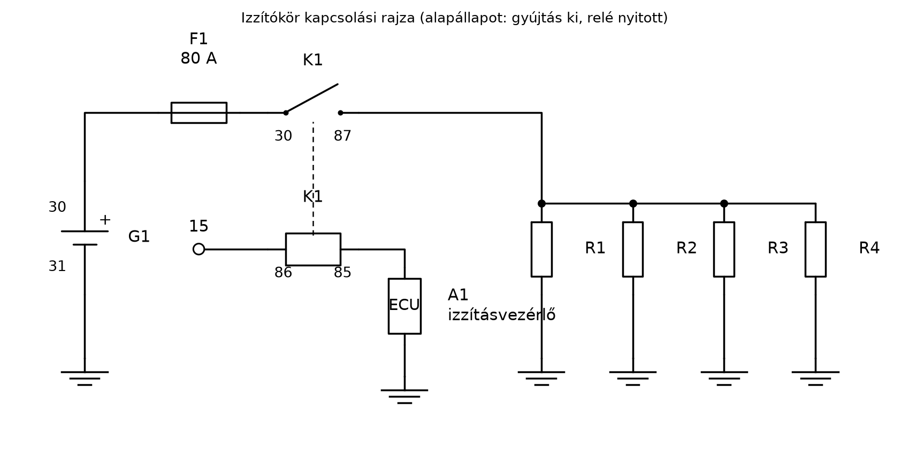

Egy hideg téli reggelen a dízelmotoros személyautó nehezen indul: a műszerfalon az izzítás visszajelző lámpája nem gyullad ki, az indítómotor forgat, de a motor csak hosszú forgatás után, erős fehér füst kíséretében indul be. Az ügyfél panasza tipikus izzítókör-hibára utal. Autószerelőként ezért pontosan ismerned kell az izzítókör felépítését, a vezérlés fázisait, a gyertyák ellenőrzését és a csere kockázatait, mert a hibás izzítás nemcsak hidegindítási nehézséget, hanem megnövekedett károsanyag-kibocsátást és a katalizátor/DPF idő előtti elhasználódását is okozhatja.
A dízel izzítókör egy nagyáramú fogyasztói kör, amely az akkumulátorról kap táplálást. Az alábbi kapcsolási rajz a fő áramkört és a relé vezérlését mutatja alapállapotban, azaz kikapcsolt gyújtásnál.

A rajzon az akkumulátor (G1) pozitív sarka a 30-as jelű fővezetékre csatlakozik, innen megy a főbiztosíték (F1, példaként 80 A) a K1 relé 30–87 munkaérintkezőjére. A relétekercs 86-os kapcsa a 15-ös kapocs (gyújtáskapcsolás után feszültség) felől kap tápot, a 85-ös kapcsát pedig az izzításvezérlő (A1) kapcsolja a test felé; a relé tehát nem a gyújtás bekapcsolásától, hanem csak a vezérlő által meghatározott ideig húz meg. A relé 87-es kimenetéről négy izzítógyertya (R1–R4) párhuzamosan kap feszültséget, és mindegyik testen zár. Amikor az izzításvezérlő meghúzza a relét, az érintkező zár, és a gyertyák nagy áramot vesznek fel.
Definíció. Az izzítógyertya (glow plug) a dízelmotor égéstérbe nyúló elektromos fűtőeleme, amely hideg motornál forró felületet biztosít a befecskendezett tüzelőanyag öngyulladásához.
Definíció. Az izzításvezérlő (glow control unit) a gyertyák be- és kikapcsolását, valamint a fűtési teljesítményt vezérli az előizzítás, az indítás közbeni izzítás és az utóizzítás fázisában.
Definíció. Az utóizzítás (afterglow) a hideg motor beindítása utáni, meghatározott ideig tartó izzítás, amely csökkenti az égés zaját, a kipufogógáz füstjét és a szénhidrogén-kibocsátást.
A hideg dízelmotor indítási nehézségének fizikai oka az öngyulladás: a beszívott levegőt a dugattyú sűríti össze, és a sűrítés hőmérséklet-növekedéssel jár. Hideg motornál a falak és a beszívott levegő hidegek, ezért a sűrítési véghőmérséklet nem éri el a tüzelőanyag gyulladási hőmérsékletét. Az izzítógyertya az égéstérben lokálisan forró pontot hoz létre, így az első befecskendezéskor megindul az égés.
A dízelmotor öngyulladással dolgozik: a sűrítési ütem végén a levegő hőmérséklete üzemmeleg motornál jellemzően 700–900 °C (ellenőrizendő: szakirodalom/gyártói adat), ami jóval a gázolaj öngyulladási hőmérséklete (kb. 250–350 °C; ellenőrizendő) fölött van, így elegendő a befecskendezett gázolaj meggyújtásához. Hideg motornál azonban a beszívott levegő hőmérséklete alacsony, a hengerfalak hűtik a sűrített levegőt, az akkumulátor feszültsége is esik, és az indítási fordulatszám kisebb, így a sűrítési véghőmérséklet alacsonyabb. A gyulladáskésedelem megnő, a motor nem indul, vagy hosszú forgatás után, fehér füsttel (el nem égett tüzelőanyag) indul el.
A legrégebbi megoldás a lángkeltésű indítóberendezés, amely a szívócsőben helyez el egy fűtőpatront és egy kis üzemanyag-adagolót. Indítás előtt a fűtőpatron izzóvá válik, a rácsöpögtetett vagy porlasztott gázolaj meggyullad, és a láng felmelegíti a beszívott levegőt. A lángkeltésű rendszert elsősorban régi mezőgazdasági és haszongépjármű-motorokon találod; ma már a közvetlen befecskendezésű motorokon az izzítógyertyás rendszer a jellemző.
A mai izzítógyertyák két fő csoportba sorolhatók.
Figyelem. A PWM-mel vezérelt (különösen kerámia) izzítógyertyák névleges feszültsége a fedélzeti feszültségnél kisebb lehet; ilyen gyertyát próbaképpen sem szabad közvetlenül az akkumulátorra kötni, mert tönkremegy (ellenőrizendő: gyártói adat).
A fémes gyertyában a szabályozótekercs a fűtőtekerccsel sorba kötve, magnézium-oxid tömésben ül; a kerámia gyertyában a fűtő réteg a kerámia testbe ágyazott. Beépítve a gyertya vékony hegye az injektor mellett nyúlik az égéstérbe – ezért törik le könnyen erőltetett kiszereléskor. A HTML-változatban csúszkával állítható az izzítási idő, és látszik, hogy a kerámia hegy gyorsabban izzik fel (szemléltető ütem).
Az izzításvezérlő feladata az izzítógyertyák üzemeltetése az indítási folyamat során.
A vezérlés formái: a legrégebbi rendszerek időrelét használnak, amely meghatározott ideig húzta be a gyertyákat. A modern rendszerekben az izzításvezérlő elektronikus, sok esetben az ECU-ba integrálva, és a gyertyákra jutó teljesítményt PWM (impulzusszélesség-moduláció) segítségével szabályozza. A PWM jelet a vezérlő a bemeneti feszültség, a motor hőmérséklete és a fordulatszám alapján állítja be, így a gyertya hőmérséklete tartósan az optimális tartományban tartható.
Az utóizzításnak kettős szerepe van: egyrészt javítja a hideg motor égését, másrészt csökkenti a kipufogógázban a részben elégett szénhidrogéneket (fehér füst). Hideg motornál a befecskendezett tüzelőanyag egy része nem ég el, a falakra lerakódik, vagy a kipufogóba távozik. Az izzógyertya forró felülete elősegíti a keverék gyulladását, így kevesebb elégetlen tüzelőanyag keletkezik. Ez közvetve védi a katalizátort és a részecskeszűrőt is.
Példa 1: egy izzítógyertya áramfelvétele hideg állapotban. Egy fémes izzítógyertya hideg ellenállása . Az akkumulátor kapocsfeszültsége . Mekkora a gyertya kezdeti áramerőssége?
Számítás.
Ohm törvénye:
Tehát egyetlen fémes izzítógyertya hidegen körülbelül 15–16 A-t vesz fel. Ez az érték a felmelegedés során csökken, mert az ellenállás nő.
Példa 2: négy párhuzamos izzítógyertya összellenállása és összáram. Négy azonos, hideg ellenállású gyertya párhuzamosan kapcsolódik ( a gyertyák száma). Az eredő ellenállás:
Az összes áramerősség:
Az akkumulátortól a gyertyákig folyó áram tehát hideg indításkor több tíz amper lehet. Ezért a főbiztosítékot és a vezetéket erre a terhelésre méretezik; a feszültségesés miatt a gyertyákon ténylegesen kevesebb feszültség jelenhet meg. Ha a vezeték ellenállása például , a feszültségesés: , tehát a gyertyákon csak marad. Ezért fontos a tiszta, szoros csatlakozó és a megfelelő keresztmetszetű vezeték.
Az izzítókör ellenőrzésekor a következő méréseket végezd el:
Egy 2,0 TDI személyautó tulajdonosa arról panaszkodik, hogy hideg
reggeleken a motor hosszan forgat, majd fehér füsttel indul, és a
műszerfalon az izzítás visszajelző lámpa rövid ideig villog. A
hibakód-kiolvasás az egyik henger izzítógyertya-áramkörét jelzi.
Az ellenőrzés során a szerelő a gyertyákat hidegen multiméterrel méri:
három gyertya ellenállása 0,9 Ω körüli, a negyediké 12 Ω, ami túl magas
– a gyertya belső fűtőszála elöregedett. A csere során a hibás gyertyát
meleg motornál, óvatosan kicsavarja, a menetet megtisztítja, az új
gyertyát gyári nyomatékkal szereli be. A javítás után hidegindítási
tesztet végez, a motor azonnal indul, a fehér füst megszűnik. Tanulság:
az izzítókör hibája hideg üzemben jelentkezik, ezért a mérést hideg
motoron kell elvégezni.
Biztonsági korlát. A feladat tanműhelyi környezetre, oktató felügyeletére és a gyártói javítási utasítás betartására vonatkozik; a megadott értékek tanulási példák.
Cél: a hibás izzítógyertyák cseréje a gyártói előírás szerint, az égéstér tömítettségének és a menetek sérülésének elkerülésével.
Szükséges szerszámok, anyagok: izzítógyertya-dugókulcs, hosszabbító, nyomatékkulcs, csőkulcs-készlet, menetpaszta (ha a gyártó előírja), munkalámpa, multiméter.
Munkalépések: 1. Azonosítsd a járművet (alvázszám, motorkód), és ellenőrizd a gyártói javítási utasítás adatait (nyomaték, csereeljárás). 2. Melegítsd fel a motort a gyártói utasítás szerint, mert a meleg hengerfejben a gyertyák könnyebben oldhatók.
Figyelem. A meleg motor alkatrészei égési sérülést okozhatnak – hőálló kesztyűt viselj, a kipufogó-leömlőt és a hengerfejet ne érintsd.
A képsor az 5–7. lépést mutatja: a dugókulcs a gyertya tengelyében áll (1), a ferde kulcs, a billegő hosszabbító és a toldócső letöréshez vezet (2), szoruló gyertyánál megállás, behatoló olaj, várakozás és óvatos oda-vissza mozgatás következik (3), beszereléskor tiszta menet és ülék, kézi becsavarás és nyomatékkulcs (4). A HTML-változat lépésenként lejátszható.
Tipikus hiba a gyakorlatban: hideg motornál erőltetni a megszorult gyertyát, ami a gyertya letöréséhez és a hengerfej sérüléséhez vezet. A beszakadt izzítógyertyát csak speciális kihúzószerszámmal és a gyártói eljárás szerint szabad eltávolítani.
1. feladat (A)
Definiáld az izzítógyertya fogalmát, és sorold fel az izzítás három
fázisát!
2. feladat (A)
Egy izzítógyertya hideg ellenállása
,
a kapocsfeszültség
.
Számítsd ki az áramerősséget és a felvett teljesítményt!
3. feladat (B)
Négy azonos izzítógyertyát párhuzamosan kapcsoltak. Mindegyik
ellenállása hidegen
,
az akkumulátor kapocsfeszültsége
.
Számítsd ki:
a) az eredő ellenállást,
b) az összes áramerősséget,
c) az egyes gyertyákon átfolyó áramot,
d) az összes felvett teljesítményt!
4. feladat (B)
Az izzítókör kapcsolási rajza alapján írd le az áram útját az előizzítás
bekapcsolásakor! Nevezd meg a főbb elemeket és a kapocsjelöléseket!
5. feladat (C)
Miért használnak a modern közös nyomásterű dízelmotorok kerámia
izzítógyertyákat és PWM szabályozást? Hasonlítsd össze a régi relés
vezérléssel!
6. feladat (D)
Egy dízelmotor hidegindítási panasszal érkezik. A mérések: az izzítás
visszajelző lámpa kigyullad, a gyertyák csatlakozóján izzítás közben
11,8 V feszültséget mérsz, az akkumulátor kapocsfeszültsége 12,5 V. A
gyertyák hideg ellenállásai: R1 = 1,1 Ω, R2 = 1,0 Ω, R3 = 25 Ω, R4 = 1,0
Ω. Melyik a hibás alkatrész, és miért? Milyen további mérést végeznél a
javítás után?
Önellenőrzés – válaszok 1. Hideg motornál a sűrítési
véghőmérséklet nem éri el a gyulladási hőmérsékletet, ezért forró
felület (izzítógyertya) szükséges az öngyulladás beindításához.
2. A fémes gyertya fém fűtőszálat használ, lassabb felmelegedésű, a
kerámia gyorsabban felfűt, magasabb hőmérsékletet ér el.
3.
;
.
4. Az utóizzítás a hideg motor beindítása után fenntartja a gyertya
hőmérsékletét, csökkenti az égés zaját, a fehér füstöt és a
szénhidrogén-kibocsátást.
5. Ellenállásmérés hidegen multiméterrel, áramfelvétel mérése
lakatfogóval, feszültségmérés terhelés alatt, valamint
hibakód-olvasás.
6. A beszakadt gyertyát ne fúrd ki; a gyártói eljárás szerint speciális
kihúzószerszámmal, meleg motornál, óvatosan távolítsd el.
1. feladat megoldása
Az izzítógyertya a dízelmotor égéstérbe nyúló elektromos fűtőeleme,
amely hideg motornál forró felületet biztosít a tüzelőanyag
öngyulladásához. Az izzítás fázisai: előizzítás, indítás közbeni
izzítás, utóizzítás.
2. feladat megoldása
;
.
Ellenőrzés: egy gyertya kb. 150 W, négy gyertya együtt több száz watt –
ez valósághű.
3. feladat megoldása
a)
b)
c)
d)
Ellenőrzés: az egyes gyertyák áramának összege
,
ami kerekítés mellett megegyezik.
4. feladat megoldása
Az előizzítás bekapcsolásakor a gyújtáskapcsoló 15-ös kapcsa jelet ad az
izzításvezérlőre, amely a K1 relé tekercsét meghúzza. A relé 30–87
munkaérintkezője zár, így az akkumulátor pozitív sarkáról a 30-as
fővezetéken, az F1 főbiztosítékon, a K1 érintkezőn és a 87-es kimeneten
át a négy párhuzamosan kapcsolt izzítógyertyára (R1–R4) jut áram. A
gyertyák test felé zárnak. Az áramút: G1+ → F1 → K1 30/87 → R1–R4 →
test.
5. feladat megoldása
A kerámia gyertya gyorsabban felfűt és magasabb hőmérsékletet ér el, így
a hidegindítás és az utóizzítás hatékonyabb. A PWM szabályozás a
gyertyák fűtési teljesítményét folyamatosan a motor hőmérsékletéhez és
fordulatszámához igazítja, így nem túlfűt, és kíméli a gyertyákat. A
régi relés vezérlés csak be- és kikapcsolást tud, az izzítási idő fix, a
gyertya hőmérséklete kevésbé szabályozott.
6. feladat megoldása
A hibás alkatrész a R3 jelű izzítógyertya, mert hideg ellenállása 25 Ω,
ami sokkal nagyobb a többi 1,0 Ω körüli értéknél. A nagy ellenállású
gyertya áramfelvétele kicsi, ezért nem fűt megfelelően, így a
hidegindítás nem lesz stabil. A csatlakozón mért 11,8 V feszültség valós
terhelés alatt van, tehát a feszültségesés elfogadható. A javítás után
hidegindítási tesztet és árammérést végeznék: a négy gyertya hideg
áramfelvételének közel azonosnak kell lennie, és hiba esetén eltérő
érték mutatkozik.
A dízelmotorok hidegindításához izzítóberendezésre van szükség, mert a sűrítés hőmérséklete hideg motornál nem éri el a gyulladási hőmérsékletet. A lángkeltésű indítóberendezés régi megoldás; a mai motorok izzítógyertyákat használnak. A fémes izzítógyertya lassabban, a kerámia gyorsabban fűt fel. Az izzításvezérlő előizzítást, indítás közbeni izzítást és utóizzítást vezérel, modern rendszerekben PWM szabályozással. Az izzítógyertyák párhuzamosan kapcsolódnak, hideg ellenállásuk kicsi (jellemzően 0,5–1,5 Ω), ezért több tíz amperes áramot vesznek fel. A hibakeresés hideg motoron végzett ellenállás- és áramfelvétel-méréssel történik; a gyertyacsere során a beszakadás elkerülése elsődleges, a meghúzási nyomatékot a gyártói adatból kell venni. Továbbvitt eredmény: az izzítókör mérési és hibakeresési módszere a Villamos diagnosztika részben és a vizsgafelkészülésben is előkerül.
A fejezet a stabil elektrotechnikai alapokra (Ohm-törvény, párhuzamos
kapcsolás) és a dízelmotoros izzítási rendszerek általános működési
elvére épül. A gyártói adatok (izzítógyertyák ellenállása, meghúzási
nyomaték, biztosítékérték, felmelegedési idő, hőmérséklet) tanulási
példák; ezeket minden konkrét javításnál a gyártói javítási utasításból
kell ellenőrizni. A hibakódok és a vezérlési stratégiák típusonként
változnak, ezért az (ellenőrizendő: gyártói adat)
megjelölésű értékeket a kiadás előtt frissíteni kell.